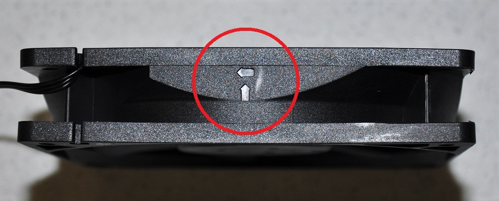
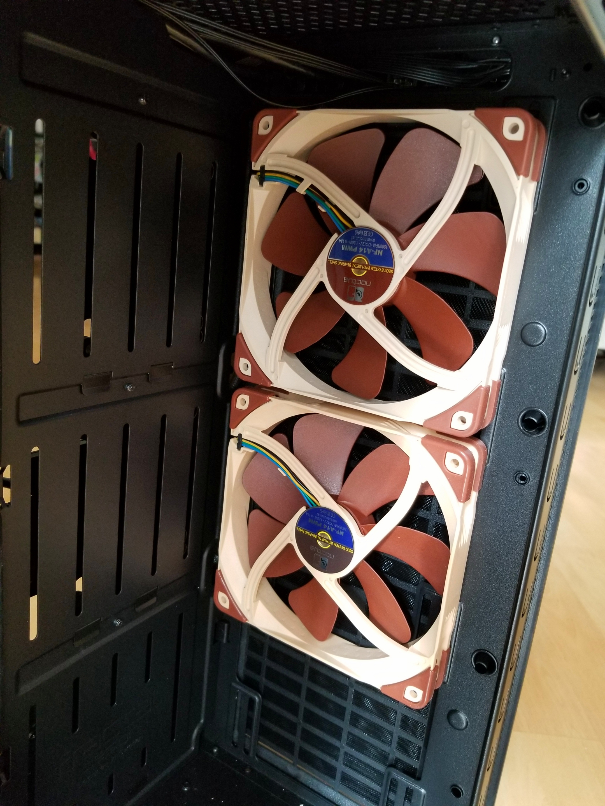
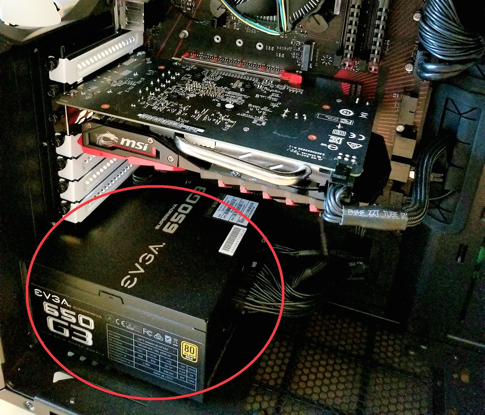
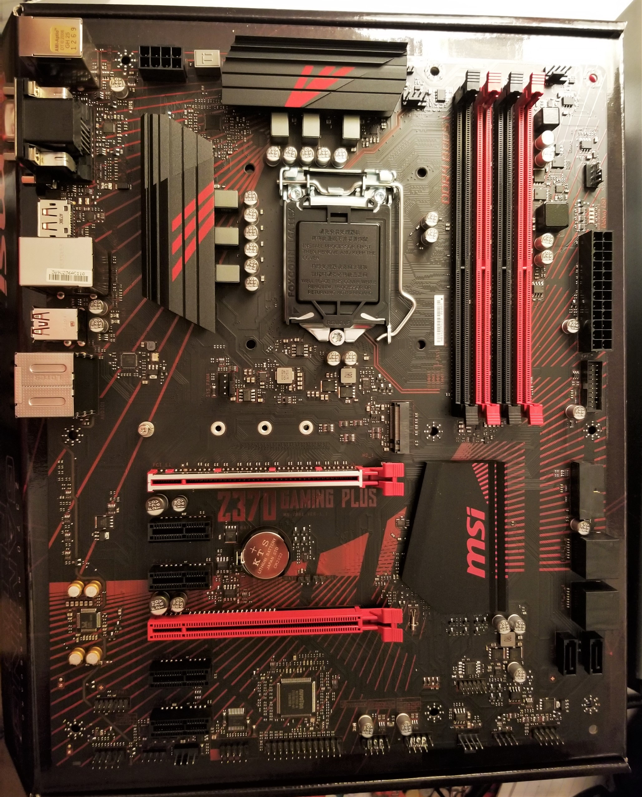

So you think you want to build a PC?
Here is a guide to help you through your PC build. This page is just one of the many that touch on the topic of PC building. It was not the author's intent to create the best PC building webpage, but rather a simple "all in one" webpage. Along this webpage, there will be several links to computer hardware definitions that you may visit, if you are unsure about a term or component. Most of the photos on this page are from my own PC build. So buckle up and perhaps you'll soon be getting that sweet 4k 60fps in all the triple A titles. Note: This guide is merely a recommendation; some steps/tips featured on this site may not be necessary for the completion of your PC build. Please use you best judgement and always check twice before jamming one thing into another.
The very first step after gathering all your parts is to prepare your PC’s case. Ensure your working area is clean and free of any clutter, as small parts such as screws may be lost if dropped or misplaced during this process. Once you have you PC case in the working area of your choice, begin by removing the side panels. There usually are thumbscrews that can be unscrewed. Afterwards, the whole panel can be slid backwards and away.
Case fans are important for ventilation. Without adequate airflow inside your case, your PC may overheat. When installing your fans, it is important to note which way the fans spin. There will be arrows molded into the plastic on the side of the fan, indicating direction of airflow. (See example below.)
 In this photo, the arrow pointing up indicates the direction of airflow.
As a general rule of thumb, air should flow from the front of the case to the back. (Hot air should be blown out the back,) and from bottom to top. (Since heat rises.)
 Above: Two Noctua AF-14 140mm case fans installed in the front of the case to act as intake fans.
 Above: A Typical PSU installed in a PC, circled in red.
Installing the PSU is simple. You can simply slide the unit into the case, making sure the exhaust fan is not obstructed. (There should be a ventilation hole) Be sure to secure the PSU to the back of the case with the screws provided. All the cables can be tucked into the case.
Preparing the motherboard will be the most delicate part of the whole PC building process. Although it may seem daunting, if you make sure you know what you're doing and treat the components with utmost care, things will go smoothly.
 Above: A bare motherboard with nothing installed. It is a good idea to rest the motherboard ontop of the box it came in. (or any other clean, flat surface of your choice)
Return to the top of the page.
© Trevor Li 2018, all rights reserved.
The image above is not how I imagined it to look like. Future Trevor, please fix this.